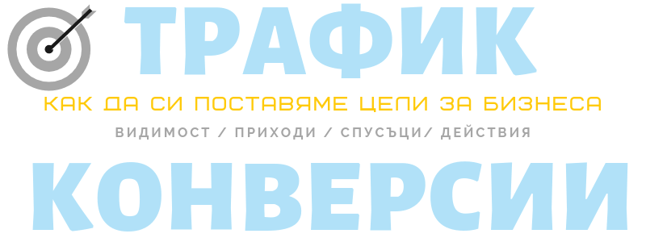

Трафик и конверсии (как да си поставяме цели за бизнеса)
За да поддържаме и да продължаваме с даден страничен бизнес, той трябва да удовлетворява някаква минимална нужда; ако не парична, то поне креативна или общителна. Иначе губим мотивация.
Затова препоръчително е да знаем в какво се целим и ако искаме да спечелим еди-колко-си пари тази година, колко прави това на месец и може би дори колко горе- долу на седмица. Също и на колко бройки отговаря това, независимо дали изработени продукти или извършени услуги.
Или колко фенове искаме да спечелим. Или на колко хора искаме да помогнем.
Чак след като сме наясно в какво се целим, може да преценим какви усилия трябва да положим за да стигнем от сегешното положение до желаното.
Не е задължително действията ни пряко да водят до продажба или друго желано действие, но трябва да си имаме едно на ум, защото понякога се самозаблуждаваме, че някои неща ни помагат, а всъщност ни губят времето.
Всяко начинание трябва да носи поне видимост или приходи.
Ако възможни клиенти, които не са чували за вас, попаднат на материал, който ясно и убедително обяснява как може да сте им от полза, това ви приближава до целта. Това може да е както листовка в пощенската кутия, така и информативна статия, която запознава читателя с темата или отделен аспект, който ги засяга.
Ако потенциални клиенти знаят за съществуването на бизнеса ви, но не купуват, първо трябва да определите каква е причината.
Това може да са цената или начина ѝ на плащане; качеството- дали действителното или такова, каквото го възприемат; трудното използване или просто незнанието как става; дизайна; просто разсейване, може би заради отлагане или липсата на спешност или на време; липсата на доказателство за ефективността; или липсата на гаранция или други уверения.
После трябва да положите старание, за да предложите точната оферта.
Но и тогава не трябва да очаквате веднага да купят. Рядко купуваме първия път, когато разберем за даден продукт.
Стига да оперирате от известно време, погледнете предишните покупки и изчислете колко хора и колко пъти трябва да са изложени на посланието и продукта ви, за да ви станат клиенти.
В зависимост от тежестта на покупката, са необходими няколко реклами или други взаимодействия с бранда ви, за да се решат.
Ако се чудим какви да са допирните точки, добре е да насочим усилията си към канали, върху които имаме контрол като имейла, защото една промяна в алгоритъма на Facebook например може драстично да намали хората, до които може да достигнем.
Що се отнася до интернет, може да направим разграничение между два вида сайта: за търсене (search) като Google и Pinterest, както и за намиране (discovery) като Facebook или Medium, където преглеждаш какво са споделили другите. При ползването на съдържание за привличане на клиенти, не трябва да забравяме постоянно да търсим клиенти и да задържаме предишните (които по- лесно биха купили пак), тоест ни трябват материали за нова или съществуващата ви публика.
Всяко начинание в началото трябва да расте- щом започвате от нулата, нямате избор. После обаче си струва да обърнете вниманието си към съществуващите възможности вместо да търсите нови.
Как да решите?
Има два вида мерки: потоци и обеми. Потокът е какво влиза, а обемът е какво успяваме да задържим. Потокът е насъщна комуникация, но обемът е това, което трае и подхранва. Потокът е социална пеперуда, а обемът е занаятчия, който излиза от пещера години след като са го видяли за последно. Трябват ви и двете, защото когато работят заедно се получава магия. Дори и да сте майстор трябва някакси да научат за невероятните ви умения. Дори самите да не се рекламирате, някой трябва да го направи. С въздушни кули само също не се получава- трябва да сте подплатени с нещо истински ценно.
Така че има два начина да получим повече клиенти: повече очи за вашето послание и продукт (трафик) и повече поощрение да направят покупка, да се абонират или да участват в каузата ви (конверсии).
ЗА ТРАФИК
Трафикът е важен не само онлайн.
От десетилетия търговците са използвали хващащи погледа табели, елегантни витрини или миризми на пресен хляб или парфюм да речем за да привличат клиенти.
Информация
За да привлечете внимание може да е достатъчно да изложите само информация като табели, ценоразписи или брошури, които да раздавате близо до помещението или по пощата. Друг вариант е предлагането на полезно съдържание: не е задължително да публикувате редовно (в блог или социална медия), стига да имате няколко основополагащи статии или ръководства, които са толкова ценни и щедри, че да излизат начело в търсачките и да са достойни за споделяне. Ако не ви се пише дълъг текст, става дори да ги създадете под формата на pdf или видео.
Тази стратегия, въпреки че в дългосрочен план е по- ефективна, изисква търпение. Оптимизацията за търсачки (SEO) отнема доста време, а за да сподели някой някакъв ресурс, трябва наистина да е качествен.
Намерете нуждаещи се
Но винаги и открай време ще постигнете най- бързо целта си като отидете директно при правилните хора.
Най- добрия начин особено ако сте посещавали специализирани събития, направете списък с хора, с които сте се запознали и искате да се свържете. Може да търсите и онлайн, но по- трудно ще ви отговорят ако не са чували за вас.
Намерете организации или форуми в същата сфера, които обикновено имат сбирки на членове, помощни материали и друга подкрепа.
Ако не намерите нищо подходящо, самите вие бъдете домакини на среща. За да не се натоварвате толкова намерете си помощник, с когото се допълвате: единият да организира, другият да забавлява гостите например. Сложете детайлите в Meetup. Изберете тема за разговор за вечерята- дори да не се придържате към нея, ще разчупи леда.
Намерете някой със същата публика
Не е толкова интерактивно, но може да се свържете с подходящи кандидати за услугата ви като на платформа, където се събират, споделите опит и им предложите полезна информация, която се намира трудно или не е добре подредена.
Така също използвайте публиката на хора, които се целят в същите бизнеси или клиенти, но не са ви директни конкуренти. Идеално те ще са една- две стъпки напред в пътуването или кариерата си или растежа си, но не недостижими. Прекаленото работа пак е проблем. Може и да предлагат допълваща се услуга. А когато двама професионалисти на горе- долу едно ниво си помагат, и двамата научават и дръпват напред. За да ги спечелите на своя страна, проучете ги преди да се свържете или бъдете фен. Когато им пишете направете посланието си възможно най- ясно и лично, като не мислете за себе си, а как можете да им бъдете полезни. Може да изготвите специален блог пост по тема, която би заинтересувала читателите им, да направите интервю за подкаста им, да организирате заедно JV (joint venture) уебинар, уъркшоп или лекция (в Youtube, Facebook live или на живо).
На края на публикацията, презентацията или в бележките предложете нещо конкретно като бяла книга, планер или чеклист, а не просто биографията си и контакти. Или поне дайте не всички, а само координатите, които използвате най- често. Къде сте най- активни: по имейл, в блог или в Instagram? Оттам вече те ще си преценят дали да харесат Facebook страницата ви, да се запишат за бюлетина ви или да ви добавят в RSS четеца си.
Освен с хора от областта, може да се свържете с журналист, който пише по темата. Читателите ще са по- незаинтересовани, но ако ви интервюират пък ще ви донесе повече тежест и доверие.
Ако става въпрос за организация, предложете им да изнесете презентация или да бъдете водещ на дискусия, която би била интересна на посетителите. Проучете предишни говорители, за да откриете празнината т.е. темата, по която никой не е говорил и съответно би била най- полезна.
За да натрупате престиж и тренинг, първо може да предложите някакъв безплатен уъркшоп в йога студио, агенция за курсове или културен център (на читалища или университети) примерно.
Изгодно или скъпо промотиране
Разбира се най- изгодния начин да научат за бизнеса ви е някой да им каже тоест от уста на уста. Затова трябва да сте забележителни и запомнящи се. Това е най- трудното, но и най-удовлетворяващото.
След това са афилиейт програмите и спонсорството, защото така може да достигнете до специфични хора, които се интересуват точно от предлаганото.
И накрая, най- скъпия и бързо резултатен начин за достигане до публиката е рекламата.
Как да намерите правилните клиенти
Но какъвто и начин да изберете трябва да сте си отговорили на някои фундаментални питания, а именно:
- Привличате ли правилната публика?
- По правилния начин ли им говорите (език, настроение, информация)?
Не искате да достигнете до кой да е, а до хората, на които бихте били полезни и интересни. Затова проучете какво има навън в света, но и предпочитанията и затрудненията на своите предишни клиенти или фенове.
Ако имате много "как да..." статии ви намират хора, които се интерсуват от направи-си-сам, но тази стратегия работи ако предлагате информационни продукти, курсове или услуги, които изискват някаква основа (например преди да предлагате SEO оптимизация трябва клиентите ви да имат сайт), а не хора, които ще ви наемат. Тогава ви трябват повече статии за стратегия (“ще трябва да направите това и това, а аз предлагам точно тези услуги”) или за избор и работа с такъв специалист какъвто сте (пр. “Как да познаете добрия електротехник/ дизайнер/ учител?”).
Ако обаче предлагате услуги или коучинг, приоритизирайте съдържание за "какво да...", ръководства за наемане на специалисти или за определяне на конкретните им нужди, както и статии с често допускани грешки и казуси.
В уеб
Не се замисляме, но ако имаме да промотираме някаква стока или услуга, дори подсъзнателно предоставяме информация за две публики: човеците и роботчета, които търсят, индексират и катерегоризират. Сетете се за някоя непотребна вещ, която сте продали в olx например. Колкото повече подробности сте сложили в описанието, толкова по- лесно ви намират. Подобно е положението, ако имате електронен магазин или се свързвате с клиенти онлайн другояче. Повечето посетители на страницата ни обикновено са незапознати с бизнеса ни, но обратното също важи. И съответно трябва да създаваме съдържание, което не е написано или както се казва оптимизирано само за търсачките, имейл, социалните мрежи или друг канал, а и за купувачи особено ако са ни фенове. Те може и да са по- малко, но ни носят повече емоции, гордост и да не забравяме приходи.
Студена и топла публика
Знайте разликата между студена и топла публика: студената са хората, които не ви познават и не знаят как бихте им били полезни, а топлата са хората, които осъзнават, че им трябва решение, но не са сигурни дали точно вашето.
Като си докарате трафик, вдигате градуса, но ако само минават и забравят, усилията ви отиват напразно.
Трафикът в важен.
Ако никой не минава на затънтена уличка, няма смисъл.
Ако покрай вас всеки ден минават хиляда човека, но само 10% си купуват, имате 100.
Ако обаче успеете да привлечете 20% оборотът ви се удвоява.
Конвертиването също е важно.
ЗА КОНВЕРСИИ
По- лесно ще убедиш приятел да дойде на кино с теб отколкото минувачите на улицата. Те са повече, но ги е грижа много по- малко. Сто няма да ви погледнат, но един ще ви види и ще се влюби. Така че по- добре да вложите усилията си да привлечете този, с който искате да общувате, работите и промените света и другият, който се е поколебал. Да обърнете някой на ваша страна е конверсия. Може да се изрази в това да прочете какво сте написали, да ви позволи да му пращате оферти или да си купи последното ви творение.
Опознайте потенциалните клиенти
За да накарате някой да ви се довери, бъдете наясно точно какво предлагате и на кого.
Колкото по- конкретно си представяте какви са предизикателствата, интересите и притесненията им, толкова по- добре може да комуникирате с потенциалните си клиенти. Ако успеете да отгатнете и да отговорите на тревогите, неяснотите и въпросите им още преди да са се оформили в ума им, ще имат усещането, че са в сигурни ръце.
Направете го лично
Колкото по- лична е комуникацията ви, толкова по- голям шанс има да продадете: повече от хората на базар ще купят бижуто ви да кажем, отколкото от електронния ви магазин.
Затова ако се запознаете с някой на конференция, не му пращайте шаблонен имейл в едно с на десет други, дори да се сетите да ги сложите на BCC.
Прогресията на една връзка обикновено е от незаинтересованa към по- близка: примерно имейл> чат> телефон> видеоконференция> на живо. Ако имате късмет да прескочите някоя стъпка, не се връщайте назад. Забавни, интелигентни и кадърни хора не се срещат под път и над път.
А когато се стигне дотам, възможно е при продажба на живо да имате успеваемост близо 50%, по телефона около 10%, а по имейл едва 2%. Затова и спама се праща на сума ти хора, но малка част от хиляди хора пак може да е хиляда.
Релевантност
Освен игра на числа, повече шанс имате ако вземете предвид релевантността на офертата ви за вашия евентуален клиент. Много по- вероятно е да продадете лед на летовници, отколкото на ескимоси каквото и да ви разправят.
Времената, когато са липсвали стоки и всички са чели и гледали едни и същи медии са отдавна отминали. Днес рекламата е свръхтаргетирана, тъй като Facebook и Google ви познават по- добре от самите вас.
Но не всеки ще има бюджет за да достигне до тази публика. А сега може да търсите клиенти и да отговаряте подробно на въпросите им във форуми и Facebook групи, където търсят точно такива услуги.
Замислете се дали познавате хора, които вярвате, че ще имат полза от офертата ви и им пишете. Кажете и на познати за дейността си, защото дори да не им трябвате нищо в момента не се знае за в бъдеще, а и може да познават някой, който търси точно вашите услуги.
Поддържайте също списък с минали клиенти, защото на тях отново може да им потрябвате. Записвайте си подробности за делата им, сещайте се и се свързвайте с тях отвреме- навреме. Направете си график и го следвайте редовно. В такъв случай, ползвайте CRM система (така наречената система за управление на взаимоотношенията с клиентите)- най- просто си сложете такава в gmail.
Кажете си
Понякога не липсата на желание, а незнанието е пречка. Казвали ли сте си “Страхотно! Ако знаех, че еди-кой-си предлага тази услуга/ тениска/ книга, щях да съм я купил/а отдавна!”?
Нормално, научени сме да не слагаме интереса си на първо място, затова доста творчески личности и други фрийлансъри не смеят да промотират офертите и стоките си.
Разбира се, ако са дошли на страницата ви за друго, не върви само да казвате “Купи! Купи!”.
Но задължително трябва да споменете с какво се занимавате. Ако не знаят как бихте им били полезни, може дори да им правите лоша услуга, защото нахаканите търговци може да не са толкова честни и безкористни.
А и не всеки чете супер съсредоточено, така че може да им трябват няколко пъти да срещнат дадена информация, за да я проумеят и да се замислят. Сложете предложенията си на достатъчно видни места, създайте pop-up на сайта (но не веднага за да не дразни), поставете най- важните оферти или линкове към информация под текста или в дъното.
Не бъдете прекалено лаконични: промотирайте не само с линк, а и с кратко описание. За да цъкнем по- уверено ни трябва представа какво ни очаква и дали е обратимо.
Отстранете пречките
Понякога без да искаме поставяме пречки пред покупката.
Има значение например кога ги караме да си създадат акаунт и какви данни ги питаме особено ако имаме сайт за електронна търговия.
Дали се ориентират с навигацията: прекалено много раздели ли има или прекалено малко, става ли ясно от етикета за какво става въпрос?
Изброени ли са всички неща, които са включени в офертата?
Ясно ли са споменати цени или контакти за запитвания?
Лесно ли се намират социалните медии, където да ви последват и да купят евентуално в бъдеще?
Има ли препоръки или рецензии за даден продукт?
Има ли как да попитат за някои характеристики, условия или плащания да кажем по чат?
Ако си харесат нещо, ясно ли е каква е следващата стъпка?
Напомнете им
В магазин или агенция, след като някой си купи или поръча дадена услуга, им дайте визитка с контакти и дори отстъпка, особено ако имат конкретна покупка предвид. Ако имат някои предпочитания или изисквания, запишете го в системата си за управление на клиенти (CRM), за да се сетите когато са готови.
Не е задължително връзката ви да приключи веднага щом приключите поръчението. Дори и да не ви наемат пак, да видите каква е била ползата от продукта или услугата ви за клиента ви може да ви даде идеи. Може пък и да познават някой, на който ще сте нужни. Напомнете им за себе си, напомнете им за офертите си или добавете още стойност без да очаквате нещо в замяна.
Спечелете доверието им
Когато смятате, че липсата на доверие спира някои потенциални клиенти да се възползват от офертите ви, важно е да наблегнете на емоциите и прозрачността.
Понякога сме прекалено рационални и си мислим, че всички виждат и разсъждават по нашия начин, но не би. Или сме толкова остроумни и нахкани, че никой не разбира за какво точно става въпрос.
Ако трябва да избирате, бъдете ясни и последователни, а не разхвърляни в пет различни посоки: по- скоро понятни отколкото умни или сладки. Не се бойте да повтаряте и да обяснявате. Не давайте направо крайното решение, а мислете на глас. Ако имат няколко варианта защо да изберат точно предложения от вас?
Освен да бъдете открити в комуникацията си трябва да ги уверите, че се справяте и с изпълнението: спазвайте уговорки, бъдете бързи и отговаряйте на запитвания без отлагане. Когато има спънка, по- лошо от всяка беда или забавяне е да не знаеш точно какво се случва. Енергичното и предвидимо темпо успокоява.
Но едно от най- силните средства за убеждаване са миналите успехи и заслуги. Затова споделяйте успешни казуси на хора, които са работили вече с вас. Помолете предишните си клиенти за отзиви и препоръки. Сложете в портфолиото, сайта или презентацията си логота на предишни клиенти, партньори и асоциации, от които сте част. Стига да имате, сложете на видно място и награди и материали в пресата, независимо дали в офиса или на уебсайта. Тъй като да прецениш самостоятелно какво е ценно, човек се впечатлява от чуждото признание. Друго ефективно средство е потенциалните клиенти да изпитат сами какво е. Говорим за мостри, демота, тестови обиколки, част от материалите и т.н.
Ако сте в началото, предложете (безплатни) мини сесии за опознаване, където всяка страна да разбере и да прецени дали си пасвате. Не е необходимо да е нещо грандиозно- 15- 20 минути може да са достатъчни.
Спешно ли е?
Друга причина, при която някой не купува е когато си казва “Има време, ще си купя после когато ми потрябва”, но този момент така и не идва.
Затова маркетолозите се стремят да създадат чувство за спешност. Някои от техниките, които използват са намаление или купон, който изтича, ранно записване, ограничено количество или ограничени места, списък с чакащи.
Но тук трябва да се внимава да не се прибягва до способи, които да карат клиента да се чувства зле, тоест без заплахи и без обиди. Признайте, че не са глупави ако не се възползват точно от вашата оферта щом на ден всеки от нас вижда хиляди призива да си купят това или онова.
Отношението ви към човек, който знаете, че ще купи и такъв, който се е отказал (засега) трябва да е ако не еднакво, то поне благосклонно. Гадно е, ако ви се случи продавачката да се намръщи щом кажете, че няма да пазарувате. Същото е и онлайн.
Вместо такива “тъмни” тактики, пробвайте да призовете решителността на евентуалните ви клиенти. Възможно е да отлагат, защото не се чувстват уверени в способността си да се справят с използването на продукта ви. Затова направете необходимото да си представят процеса и резултата, дори да е далечен или труднопостижим.
Сложете също описание на идеалния ползвател на предложението ви озаглавено например “това е перфектно за вас ако…”. То ще подскаже дали са на правилния етап. Не искате в курс за SEO да се записват хора, които не са чували за дигитален маректинг. Не искате ножът ви изкован на връх Фуджи да попадне в ръцете на начинаещ шеф-готвач. Не искате малки бизнеси да търсят услугите ви, ако работите само с корпорации. Ако има стъпка преди да ви наемат, насочете ги в правилната посока. Така печелите благодарността им и може би бъдещ клиент.
Разберете спусъците им
Винаги е по- добре да сте максимално ясни какво представялва дейността ви и какво да очакват. Повечето от хората, които влизат в досег с бизнеса ви, не са чували за вас или поне не са наясно с подробности. Освен, че сте ключар/ рекламист/ програмист, изтъкнете също защо се занимавате с това и по какъв начин, с други думи какви са вашите ценности, емоции и истории.
По- добре стотина човека да ви обичат, отколкото хиляди да се примиряват или да не ви забелязват.
Затова най- ангажираните брандове и личности създават около себе си общност: със собствени лого и символи, название, език и “наши си шеги”, плюс достъп до вътрешна информция. Да вземем за пример лейди Гага и нейните “малки чудовища” или Apple и маняците, които всяка година следят със затаен дъх какво ще съобщят на събитието им в Калифорния (WWDC).
За да ви наеме който и да било трябва да имат някаква причина:
- търсят облекчение или да решат болезнен проблем;
- търсят новост;
- искат да впечатлят или да са в крак с модата.
Но само това не е достатъчно.
Щом целта им е да стигнат от точка А до точка Б, трябва да ги придвижите възможно най- напред в пътешествието.
За да постигнете тази цел, помага да могат да визуализират промяната, или да разберат защо го правите, или да им предложите най- лесното решение, или да ги вдъхновите, или да предизвикате любопитството им, или да им подготвите вълнуващо очакване, или да бъдете необикновено честни, или да ги накарате да се чувстват важни или специални, или да се възползвате от някое събитие, което ги занимава и т.н.
Подобни неща, които карат някой да действа се наричат спусъци.
Променте (леко) офертата
Все пак промените, които правите може да накарат старите ви клиенти да се почувстват излъгани или объркани. Важно е постоянно да еволюирате, а ако сте по- спокойни предложете на лоялните клиенти период със старите условия, за да се подготвят психически.
С една дума, трябва да постигнете баланс от оферти и съдържание, което е интересно едновременно за нови хора и за вече съществуващата публика.
Така не забравяте нито че ви трябва постоянен трафик, за да не се озовете изведнъж с изпълнени поръчки, но без евентуални нови клиенти, нито че ви трябват конверсии, за да не се отказват всички, които сте привлекли първоначално по един или друг начин.
И така имате по- изразителна идея какво трябва да постигнете, но към целта има обикновено две пречки: трудност и разсейване. Вижте как да се справите с тях!